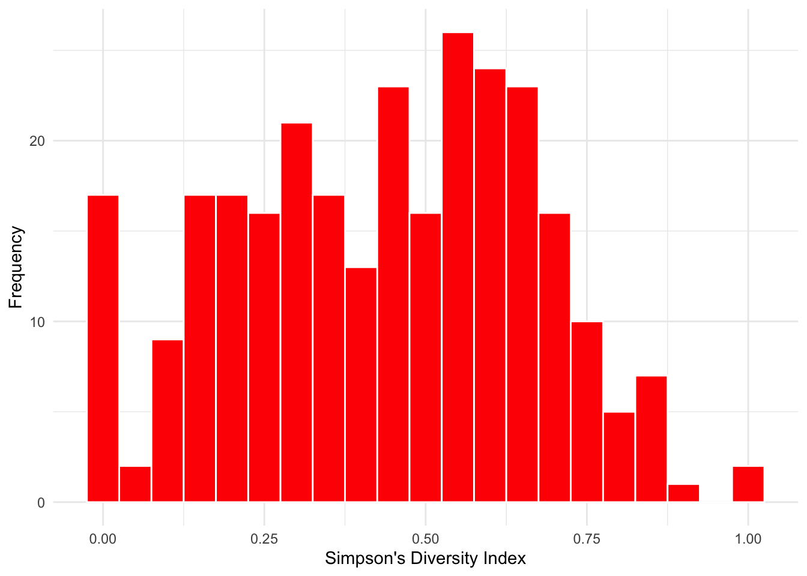
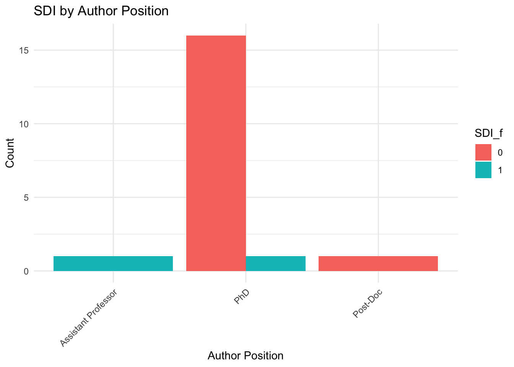
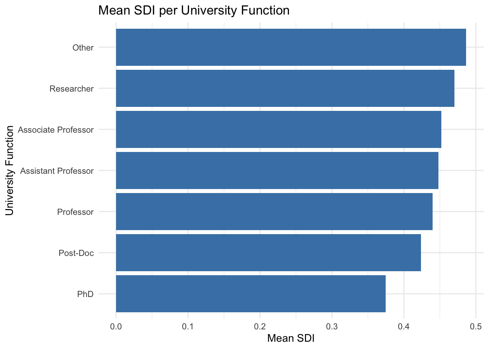

Theory
René van Son
1 Data
1.1 Data Collection
The data used in this research was compiled by web scraping information of all Sociology and Political Science scholars from all universities in the Netherlands. In the first part of the data collection process, all relevant information was compiled about the author’s position, university affiliation, names, id’s, departments, etc. Next, all published works together with relevant work-related information of these authors (work id, concepts, citations, abstracts, topics, etc.), up until 2024, were scraped by using OpenAlex Priem et al. (2022). From this data I subsetted a final dataset, consisting of all authors from the Sociology and Political Science departments at the Radboud University and the University of Amsterdam (n=282).
Furthermore, I compared the collaboration networks in two periods of time. The first wave ranges from 2016 to 2019. The second wave ranges from 2020 to 2023. Collaboration networks were made on the basis of these waves. The networks are directed networks, which means that it is assumed that the first author sends ties to all collaborators on a specific work.
1.2 Dependent Variable
The dependent variable in this research is the network of collaborations between researchers, where the collaborations are the ties and the researchers are the nodes Van Duijn et al. (1999). The subsequent analysis will be an attempt to describe and explain the the changes in the network and the ‘behaviour’ of the people that make up the network. In more formal terms, as used in the RSiena manual (Ripley & Preciado, 2011), the dependent variable(s) in social network analysis are the creation of a tie or the maintenance (endowment) of a tie (technically, the breaking of a tie is also an option, but will not be considered here). In other words, the dependent variable is the network. However, the network can also ‘function’ as independent variable (so ‘explaining’ itself, for example in reciprocity, where the network effects have influence on the network structure).
1.3 Independent Variables
1.3.1 Interdisciplinarity
The main independent variable in this research is interdisciplinarity. The OpenAlex data structure assigns to each work a Topic entity. This entity is divided into ‘domains’, ‘fields’, ‘subfields’ and ‘topics’, where ‘domain’ is the broadest category and ‘topics’ is the most fine grained category (see Figure 1). For the subsequent analysis, I used ‘fields’ as the main analytic category, as this proved to be the right balance in terms of subtleness and operationalizability. Both ‘subfields’ and ‘topics’ were also tested, but proved to be either too fine-grained or too broad.

Figure 1: OpenAlex classification of the Topic
entity
Source: https://docs.openalex.org/api-entities/topics
To get a measure of interdisciplinarity at the author level, I use the following formula, resulting in the Simpson’s Diversity Index:
\[ SDI = 1 - \Big[\sum_{i=1}^n p_{i}^2\Big] \]
Here, \(p\) represents the proportion of works by an author working in a certain field. Squaring ensures giving more weight to the fields that are more common. So, in essence, this formula means taking the sum of all the squared proportions \(p^2\) for all fields \(i\) and subtracting it from 1. The Simpson’s Diversity Index (SDI) can be used to measure the diversity of the authors’ research practices by highlighting how ‘concentrated’ their works are. A score closer to 1 will reflect an engagement in a more diffused set of research fields, while a score close to 0 will reflect a more homogeneous set of research fields.
Some notes of caution should be made when using this measure of interdisciplinarity. First, the SDI does not measure the distance between research fields: it only measures whether or not a field is different from another one, but there is no qualitative comparison of fields ‘among each other’. To incorporate this, one would need a measure that takes into account these distances between fields (such as the Rao-Sterling index). However, this lies outside the scope of this research.
Moreover, the SDI (as well as other measures for interdisciplinarity) does not take into account the actual interdisciplinary contribution an author has made to a work. For example, I could be a philosopher who marginally contributes to a paragraph of a physics paper. As soon as I am listed as an author of the paper, I will have worked in the field of natural sciences (and, vice versa, the physicist will have worked in the field of philosophy). However, this is partly resolved by the squaring of \(p\) (which, of course, has implications by itself, but this seems the best way to go here).
1.4 Analytical Strategy
The analysis will be divided in three steps. First, I will provide some descriptive statistics. These descriptives apply to the whole sample, and are presented to provide a broad overview of the data. Second, I will present some network descriptives, together with some visualizations of the networks in the two waves. This is done in order to capture some of the macro-level change in the network. Third, I will use RSiena to provide an analysis for the network evolution. RSiena works within the context of Stochastic Actor-Oriented Models, where networks are assumed to evolve based on actor attributes and preferences. Specifically, RSiena models allow researchers to attribute macro-level network evolution to micro-level changes. As such, Siena models are able to estimate parameters and distinguish selection (where the dependent variable is the network) and influence (where the dependent variable is behaviour) processes, which is beneficial when trying to research social networks.
1.5 Descriptive Statistics
Looking at the descriptive statistics below, we can see several things. Firstly, the distribution of the SDI measure aligns with expectations, showing a relatively high number of cases with an SDI of around 0.5, while scores closer to 0 or 1 are more rare. In short, most people are “averagely” interdisciplinary. However, quite some authors seem to have an SDI of 0, indicating that there is no variation at all in the fields they work in. Section 1.6.5.1 illuminates that these authors are all PhDs (with one exception, who is a post-doc), suggesting that doctoral students indeed often tend to work ‘solely’ in their own field.
Second, there are no anomalies in either distributions of discipline or department (i.e. sociology/political science). 166 authors in the sample were connected to the political science department of either the RU or the UvA, and 116 authors were connected to the sociology department of either the RU or the UvA. Some authors have a university that is neither the RU nor the UvA listed under the ‘Universiteit24’ variable, which means that they are affiliated to the RU or the UvA in some way, but probably not as ‘main’ university. When looking at the SDI score grouped by University affiliation (Section 1.6.5.5), no notable differences catch the eye. The UvA scholars have a slightly higher mean SDI of 0.45, with RU scholars having a mean SDI of 0.40.
Third, when looking at the differences in SDI between authors with different positions, it becomes clear (at least: at ‘first glance’) that PhD students indeed have a lower mean-SDI than all other positions. Interestingly, researchers without any teaching position at the university seem to score relatively high at the SDI measure, indicating that being more ‘loosely’ bound to a university might foster interdisciplinary possibilities. The ‘other’ category represents unknown or unclear positions, and should be ignored as such.
1.6 Data Preparation
1.6.1 Start
#1. Load functions
#clean
rm(list = ls())
#check package function
fpackage.check <- function(packages) {
lapply(packages, FUN = function(x) {
if (!require(x, character.only = TRUE)) {
install.packages(x, dependencies = TRUE)
library(x, character.only = TRUE)
}
})
}
#save function
fsave <- function(x, file = NULL, location = "./data/processed/") {
ifelse(!dir.exists("data"), dir.create("data"), FALSE)
ifelse(!dir.exists("data/processed"), dir.create("data/processed"), FALSE)
if (is.null(file))
file = deparse(substitute(x))
datename <- substr(gsub("[:-]", "", Sys.time()), 1, 8)
totalname <- paste(location, datename, file, ".rda", sep = "")
save(x, file = totalname) #need to fix if file is reloaded as input name, not as x.
}
#load function
fload <- function(filename) {
load(filename)
get(ls()[ls() != "filename"])
}
#nice view function
fshowdf <- function(x, ...) {
knitr::kable(x, digits = 2, "html", ...) %>%
kableExtra::kable_styling(bootstrap_options = c("striped", "hover")) %>%
kableExtra::scroll_box(width = "100%", height = "300px")
}
#collaboration network function
fcolnet <- function(data = scholars, university = "RU", discipline = "sociology", waves = list(c(2015,
2018), c(2019, 2023)), type = c("first")) {
# step 1
demographics <- do.call(rbind.data.frame, data$demographics)
demographics <- demographics %>%
mutate(Universiteit1.22 = replace(Universiteit1.22, is.na(Universiteit1.22), ""), Universiteit2.22 = replace(Universiteit2.22,
is.na(Universiteit2.22), ""), Universiteit1.24 = replace(Universiteit1.24, is.na(Universiteit1.24),
""), Universiteit2.24 = replace(Universiteit2.24, is.na(Universiteit2.24), ""), discipline.22 = replace(discipline.22,
is.na(discipline.22), ""), discipline.24 = replace(discipline.24, is.na(discipline.24), ""))
sample <- which((demographics$Universiteit1.22 %in% university | demographics$Universiteit2.22 %in%
university | demographics$Universiteit1.24 %in% university | demographics$Universiteit2.24 %in%
university) & (demographics$discipline.22 %in% discipline | demographics$discipline.24 %in% discipline))
demographics_soc <- demographics[sample, ]
scholars_sel <- lapply(scholars, "[", sample)
# step 2
ids <- demographics_soc$au_id
nwaves <- length(waves)
nets <- array(0, dim = c(nwaves, length(ids), length(ids)), dimnames = list(wave = 1:nwaves, ids,
ids))
dimnames(nets)
# step 3
df_works <- tibble(works_id = unlist(lapply(scholars_sel$work, function(l) l$id)), works_author = unlist(lapply(scholars_sel$work,
function(l) l$author), recursive = FALSE), works_year = unlist(lapply(scholars_sel$work, function(l) l$publication_year),
recursive = FALSE))
df_works <- df_works[!duplicated(df_works), ]
# step 4
if (type == "first") {
for (j in 1:nwaves) {
df_works_w <- df_works[df_works$works_year >= waves[[j]][1] & df_works$works_year <= waves[[j]][2],
]
for (i in 1:nrow(df_works_w)) {
ego <- df_works_w$works_author[i][[1]]$au_id[1]
alters <- df_works_w$works_author[i][[1]]$au_id[-1]
if (sum(ids %in% ego) > 0 & sum(ids %in% alters) > 0) {
nets[j, which(ids %in% ego), which(ids %in% alters)] <- 1
}
}
}
}
if (type == "last") {
for (j in 1:nwaves) {
df_works_w <- df_works[df_works$works_year >= waves[[j]][1] & df_works$works_year <= waves[[j]][2],
]
for (i in 1:nrow(df_works_w)) {
ego <- rev(df_works_w$works_author[i][[1]]$au_id)[1]
alters <- rev(df_works_w$works_author[i][[1]]$au_id)[-1]
if (sum(ids %in% ego) > 0 & sum(ids %in% alters) > 0) {
nets[j, which(ids %in% ego), which(ids %in% alters)] <- 1
}
}
}
}
if (type == "all") {
for (j in 1:nwaves) {
df_works_w <- df_works[df_works$works_year >= waves[[j]][1] & df_works$works_year <= waves[[j]][2],
]
for (i in 1:nrow(df_works_w)) {
egos <- df_works_w$works_author[i][[1]]$au_id
if (sum(ids %in% egos) > 0) {
nets[j, which(ids %in% egos), which(ids %in% egos)] <- 1
}
}
}
}
output <- list()
output$data <- scholars_sel
output$nets <- nets
return(output)
}
#2. check packages
#check packages
packages = c("RSiena", "tidyverse", "stringdist", "stringi", "installr", "foreign", "jsonlite", "openalexR", "scholar", "rvest", "igraph", "tidyr")
fpackage.check(packages)
#3. load data
scholars <- fload("/Users/jannevanheesch/Documents/R. SN/scholars_20240924.rda")1.6.2 Subset
#1. Political science & Sociolgy. Waves 2016-2019, 2020-2023.
df_RU <- fcolnet(data = scholars, university = c("RU", "UvA"), discipline = c("sociology", "political science"), waves = list(c(2016,
2019), c(2020, 2023)), type = c("first"))
#2. Separate data
df <- df_RU$data #separate scholars, works, demographics
nets <- df_RU$nets #networks
#df for demographics (author level)
df_ego <- do.call(rbind.data.frame, df$demographics)
#df for authors
df_auth <- do.call(rbind.data.frame, df$scholars_oa)1.6.3 Interdisciplinarity
#3. Interdisciplinarity
#create function for all fields
f_topics_f <- function(x) {
topics <- do.call(rbind.data.frame, x$topics)
topics <- topics[topics$i < 4 & topics$name == "field",]
SDI_f <- 1 - sum((prop.table(table(topics$display_name)))^2)
return(SDI_f)
}
SDI_f <- sapply(X = df$works, FUN = f_topics_f)
SDI_f
# attach to df_ego
df_ego <- cbind(df_ego, SDI_f)#4. Measures for interdisciplinarity I did not use (for Appendix?)
#subfields
f_topics_sf <- function(x) {
topics <- do.call(rbind.data.frame, x$topics) #ik zet voor 1 auteur alle topics onder elkaar
topics <- topics[topics$i < 4 & topics$name == "subfield",]
SDI_sf <- 1 - sum((prop.table(table(topics$display_name)))^2)
return(SDI_sf)
}
SDI_sf <- sapply(X = df$works, FUN = f_topics_sf)
SDI_sf
#topics
f_topics_t <- function(x) {
topics <- do.call(rbind.data.frame, x$topics)
topics <- topics[topics$i < 4 & topics$name == "topic",]
SDI_t <- 1 - sum((prop.table(table(topics$display_name)))^2)
return(SDI_t)
}
SDI_t <- sapply(X = df$works, FUN = f_topics_t)
SDI_t
df_ego <- cbind(df_ego, SDI_sf, SDI_t)1.6.5 Descriptives
1.6.5.1 Distribution of SDI
#1. Simpson's Diversity Index
summary(SDI_f)## Min. 1st Qu. Median Mean 3rd Qu. Max.
## 0.0000 0.2421 0.4444 0.4311 0.6127 1.0000ggplot(df_ego, aes(x = SDI_f)) + geom_histogram(binwidth = 0.05, fill = "red", color = "white") + labs(x = "Simpson's Diversity Index",
y = "Frequency") + scale_x_continuous() + scale_y_continuous() + theme_minimal()
#2. Show the cases for which SDI score was 0 or 1
df_zero_or_one <- df_ego %>%
filter(SDI_f %in% c(0, 1))
print(df_zero_or_one)ggplot(df_zero_or_one, aes(x = function_2024, fill = as.factor(SDI_f))) +
geom_bar(position = "dodge") +
labs(title = "SDI by Author Position",
x = "Author Position",
y = "Count",
fill = "SDI_f") +
theme_minimal() +
theme(axis.text.x = element_text(angle = 45, hjust = 1))
1.6.5.2 Distribution of disciplines
#2. Distribution of scholars by university and by department
table(df_ego$discipline.24)##
## political science sociology
## 166 1161.6.5.3 Distribution of Universities
table(df_ego$Universiteit.24)##
## Bocconi University
## 1
## EUR
## 1
## Leiden uni/UvA
## 1
## RU
## 86
## RU/RUG
## 1
## RUG
## 1
## Uni Gothenburg
## 1
## UU
## 3
## UU/UvA
## 1
## Uva
## 1
## UvA
## 157
## UvA?
## 1
## UvA/Frankfurt School of Finance & Management
## 1
## UvA/Shandong uni
## 1
## UvA/Uni of Lausanne
## 1
## UvA/University of Lausanne
## 1table(df_ego$Universiteit.22)##
## Bocconi University/UvA
## 1
## Leiden
## 1
## Leiden uni/UvA
## 1
## RU
## 89
## RU/RUG
## 1
## RUG/RU
## 1
## Universiteit Gent
## 1
## UU
## 1
## UU/UvA
## 1
## UvA
## 142
## UvA/EUR
## 1
## UvA/Frankfurt School of Finance & Management
## 1
## UvA/Shandong uni
## 1
## UvA/Uni Gothenburg
## 2
## UvA/Uni of Lausanne
## 1
## UvA/University of Lausanne
## 11.6.5.5 Mean SDI by University
#3. mean SDI by University
df_ego %>%
mutate(University = case_when(str_detect(Universiteit.24, "RU") ~ "RU", str_detect(Universiteit.24,
"UvA") ~ "UvA", .default = "No Official Affiliation")) %>%
group_by(University) %>%
summarise(mean_SDI = mean(SDI_f, na.rm = TRUE)) %>%
fshowdf()| University | mean_SDI |
|---|---|
| No Official Affiliation | 0.43 |
| RU | 0.40 |
| UvA | 0.45 |
1.6.5.6 Mean SDI per Department
#4. mean SDI by department in 2024
df_ego %>%
mutate(Department = case_when(str_detect(discipline.24, "sociology") ~ "sociology", str_detect(discipline.24,
"political science") ~ "political science", .default = "no discipline")) %>%
group_by(Department) %>%
summarise(mean_SDI = mean(SDI_f, na.rm = TRUE)) %>%
fshowdf()| Department | mean_SDI |
|---|---|
| political science | 0.40 |
| sociology | 0.47 |
1.6.5.7 Mean SDI per University Function
# Calculate mean SDI_f per function_2024
df_means <- df_ego %>%
group_by(function_2024) %>%
summarise(mean_SDI = mean(SDI_f, na.rm = TRUE))
# Print the summary table if you want to see it
print(df_means)## # A tibble: 7 × 2
## function_2024 mean_SDI
## <chr> <dbl>
## 1 Assistant Professor 0.448
## 2 Associate Professor 0.452
## 3 Other 0.487
## 4 PhD 0.375
## 5 Post-Doc 0.424
## 6 Professor 0.440
## 7 Researcher 0.470# Plot the results
ggplot(df_means, aes(x = reorder(function_2024, mean_SDI), y = mean_SDI)) +
geom_bar(stat = "identity", fill = "steelblue") +
labs(title = "Mean SDI per University Function",
x = "University Function",
y = "Mean SDI") +
coord_flip() +
theme_minimal()
1.6.5.8 Save file
write_csv(df_ego, "data_final.csv")
saveRDS(nets, "nets.rds")